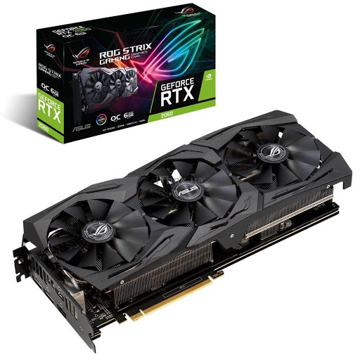

Основні характеристики:
частота чіпа: до 2044 МГц; режим з розгоном – до 2064 МГц;
пам'ять: 8 Гб;
пасивний режим охолодження: є;
RGB-підсвічування: ні;
фірмова утиліта для налаштування: GPU Tweak II.
Плюси: одна із відносно доступних моделей AMD 6600.
Мінуси: немає RGB-підсвічування.
Ціна в Україні: 26 999 грн
Sapphire Radeon RX 6600 XT Pulse 8G
Основні характеристики:
частота чіпа: основний режим – до 2382 МГц; режим з розгоном Boost – до 2593 МГц;
пам'ять: 8 Гб;
пасивний режим охолодження: ні;
RGB-підсвічування: ні;
фірмова утиліта для налаштування: TriXX.
Фішка: карта просто розганяється за рахунок увімкнення режиму Boost у фірмовому додатку TriXX. Режим Boost включає технологію Radeon Image Sharpening від AMD – FPS збільшується завдяки тому, що оптимізується обробка 3D-графіки.
Плюси: одна із відносно доступних моделей AMD 6600 XT.
Мінуси: немає RGB-підсвічування та режиму пасивного охолодження.
Ціна в Україні: 28 999 грн
Palit GeForce RTX 3060 Dual 12GB
Основні характеристики:
частота чіпа: до 1777 МГц;
пам'ять: 12 Гб;
пасивний режим охолодження: є (0-dB TECH);
RGB-підсвічування: є;
фірмова утиліта для налаштування: ThunderMaster.
Фішка: на задній панелі біля плати розміщено настроюване RGB-підсвічування у вигляді шестикутних сот, яке доповнює світлодіодний індикатор на торці.
Плюси: одна із відносно доступних моделей Nvidia 3060, RGB-підсвічування на задній панелі.
Мінуси: немає заводського розгону.
Ціна в Україні: 28 599 грн
Основні характеристики:
частота чіпа: до 1837 МГц;
пам'ять: 12 Гб;
пасивний режим охолодження: є (технологія 3D Active);
RGB-підсвічування: є (RGB Fusion 2.0);
фірмова утиліта для налаштування: AORUS Engine.
Фішка: плата оснащена індикатором, який попередить блимання про несправність блока живлення.
Плюси: три кулери, індикатор живлення.
Мінуси: ні.
Ціна в Україні: 29 999 грн
MSI GeForce GTX1660 6144Mb VENTUS XS OC
Відеокарта, що вийшла в 2019, стала своєрідним еталоном у своєму класі і актуальна досі. У бусті вона досягає 1830 МГц і дозволяє з комфортом (часто на ультра налаштуваннях) грати на Full HD у більшості проектів останніх років.
Карта оснащена пам'яттю GDDR5, проте успішно конкурує за продуктивністю з розглянутої на початку рейтингу 5500 XT, у багатьох завданнях випереджаючи її. Справа в тому, що розрядність шини пам'яті у неї 192, проти 126 біт у відеокарти від Radeon.
GTX 1660 хороша практично в будь-якому виконанні, у чіпа низький TDP, він легко і просто розганяється. Єдине, якщо планується розгін, краще уникати версій із одним вентилятором. Також варто відзначити спеціальну утиліту, що йде в пакеті драйверів nVidia, яка порадує любителів мережевих ігор – з її допомогою ви можете зменшити лаги затримки, що виникають через провисне інтернет-з'єднання.
MSI GeForce GTX1660 SUPER 6144Mb GAMING X
Дана відеокарта планувалася як доступніша альтернатива версії 1660 Ti, і "розігнати" її по відношенню до базової 1660 вирішили залишивши на борту той же графічний чіп, але оснастивши пам'яттю GDDR 6. В результаті фактична пропускна здатність зросла до 336 ГБ/с проти 192 ГБ /с у GTX 1660, що позитивно позначилося на продуктивності карти в цілому.
Це, безперечно, відеокарта для ентузіастів, які хочуть грати у Full HD на максимальних налаштуваннях графіки саме у Triple A проектах. Причому ця карта здатна видати 50-60 fps на максималках навіть у 2K на деяких проектах.
Чи потрібна така продуктивність на 1960х1080? Тут вирішувати кожному. Резюмуючи варто відзначити, що 1660 Super пропонує "з коробки" те, що ви можете отримати від вдалого зразка 1660, підібравши оптимальний режим роботи в розгоні. Тут ніяких особливих налаштувань не потрібно, все працює за принципом Plug & Play.
MSI Radeon RX 5600 XT 6144Mb GAMING X
Одна з найспірніших нових відеокарт від Radeon, проте залишається чи не єдиною картою для ентузіастів розгону, з якої вони можуть вичавити продуктивність максимально близьку до RTX 2060.
Сам виробник позиціонує її як RX590 на максималках, проте на архітектурі Polaris, все ж таки, 8 Гб відеопам'яті були нормою, тоді як у 5600XT тільки 6 Гб. Згодом цього стане недостатньо.
Фактично, у даної відеокарти той же відеочіп, що і у 5700XT, і її швидкодія обмежена лише зменшеною відеопам'яттю та пропускною шиною (тут 192 біти, проти 256 у моделях 5700-ї серії).
В результаті ви можете отримати високі швидкості в розгоні, але "милиці" штучно вставлені в неї виробником не дозволять підняти її швидкість до рівня наступного сегмента відеокарт. При заявленій виробником ціні це непогана альтернатива тієї ж 1660 Super або 2060, але варто розуміти, що це відеокарта без будь-якої перспективи на майбутнє.

ASUS GeForce RTX2060 6144Mb ROG STRIX OC GAMING
Ця відеокарта стала найбюджетнішим представником чіпів на архітектурі Pascal з підтримкою Ray Tracing (трасування променів, що автоматично коригує тіні та розподіл світла у грі, що підвищує реалістичність зображення). Її потенціал обмежують лише 6 Гб оперативної пам'яті та трохи занижені частоти чіпа. Що, втім не робить її гіршою саме на Full HD дозволі.
Дана відеокарта показує результати, порівняні з GTX 1070 попереднього покоління, тільки за допомогою DXR і DLSS (технологія згладжування на основі алгоритмів глибокого навчання штучного інтелекту). Ресурсу 2060 вистачає на роздільну здатність 2K і, у деяких проектах, навіть на 4K (25-30 fps).
Безперечно, це революційна для дати свого релізу середньобюджетна карта, з недоліків якої можна відзначити лише її дефіцит на ринку та завищені ціни на старті продажів, які через рік стабілізувалися.
MSI Radeon RX 5700 XT 8192Mb GAMING X
Виходу відеокарт на архітектурі RDNA все чекали з нетерпінням, і очікування це було цілком виправданим. Оновлений GPU Navi 10 з повністю переробленою логікою зміг дати впевнений бій прискорювачам NVIDIA у середньо-високому ціновому діапазоні. RX 5700 XT йде практично врівень з RTX 2070, але обійдеться дешевше за останню.
Аналог трасування променів виробник обіцяє реалізувати тільки в прискорювачах на чіпах RDNA 2. Тут же головним завданням розробників була мінімізація тепловиділення, в 5700XT робоча напруга нижче, ніж у RX590 попереднього покоління, завдяки чому суттєво зменшився TDP як при розгоні, так і . Так що тепер у AMD є що протиставити nVidia у середньо-високому сегменті.
Тим більше, що "червоні" завжди славилися тим, що підтримують свої відеокарти до останнього. Цикл підтримки – 10 років і вже через 2-3 роки прискорювачі від AMD із оптимізованими драйверами починають впевнено випереджати конкурентів. В цілому з Quad HD пристрій справляється легко і під цю роздільну здатність у нього ще солідний запас на майбутнє
MSI GeForce RTX3060Ti 8Gb GAMING X TRIO
У "старших" моделей 30-ї серії вже з'явилися прямі конкуренти від Radeon на архітектурі RDNA 2, а новий GeForce RTX 3060 Ti ще якийсь час буде унікальним представником ніші з ціновим порогом до 400 $. До січня 2021 року конкурентів у прискорювача не з'явиться.
Відеокарта пропонує принципово інший рівень швидкодії випереджаючи свою попередницю RTX 2060 Super у більшості ігор на 30-39%, а RX 5700 XT від Radeon - на 24-30%. По-суті, ця картка є повним аналогом RTX 2080 SUPER, навіть трохи випереджаючи останню в проектах з Ray Tracing.
На даний момент це, напевно, сама безпроблемна Quad HD карта в своєму сегменті, що працює на максимумі можливостей відразу з коробки. Великим бонусом буде підтримка DLSS та певний розгінний потенціал, що залежить від системи охолодження. У запропонованому нами виконанні MSI GAMING X TRIO жодних проблем із тротлінгом навіть при серйозному розгоні виникнути не повинно.
ASUS GeForce RTX3060 12Gb ROG STRIX GAMING
GeForce RTX 3060 з'явилася як заміна 2060, хоча вона швидше за аналог 2060 Super. Фактично, новинка від nVidia наздоганяє свою попередницю з префіксом супер і настає на п'яти RX 5700 XT вже на штатних налаштуваннях. Але варто задіяти розгінний потенціал, і конкурент від Radeon вже програє на 5-7%. Як і всі представники RTX-серій, карта підтримує трасування променів і згладжування DLSS, що дозволяє отримати більше деталізації навіть у погано оптимізованих іграх. Загалом цього більш ніж достатньо для 2560×1440, а на звичний 1960х1080 NVIDIA вже явно не орієнтується, залишаючи під нього старі моделі.
Модель оснащена 12 Гб відеопам'яті GDDR 6. На даний момент є зовсім небагато ігор здатних завантажити більше 8, проте їхня поява справа часу, так що цей запас не буде зайвим.
Конкретна модель ASUS ROG Strix вдало реалізує весь потенціал моделі, оснащуючи її масивним радіатором з трьома кулерами, що дозволить спокійно розігнати карту, не побоюючись перегріву.
MSI GeForce RTX2080 Ti 11Gb SEA HAWK EK
Флагман минулого покоління від NVIDIA на архітектурі Turing спочатку створювався під 4K дозвіл і є ультимативним рішенням у цій ніші. Поступається вона тільки новинкам від AMD і своїм спадкоємцям, відеокартам 30-ї серії 3080 і 3090.
Рекомендована ціна на неї, на старті продажів, встановилася на рівні 1000 $ і це на сьогодні єдине протипоказання до покупки. Так як на 3080 встановлена рекомендована ціна 750 $. Отже, купувати 2080Ti є сенс, коли ціна на неї суттєво знизиться. Хоча ці висновки швидше теоретичні, оскільки жодної з цих карток поки що немає на ринку.
Проте: 11 Гб швидкої відеопам'яті, високий розгінний потенціал та топовий чіп розрахований під водяне охолодження просто не можуть коштувати дешево. Відеокарта відмінно показує себе у будь-якому 4K контенті.